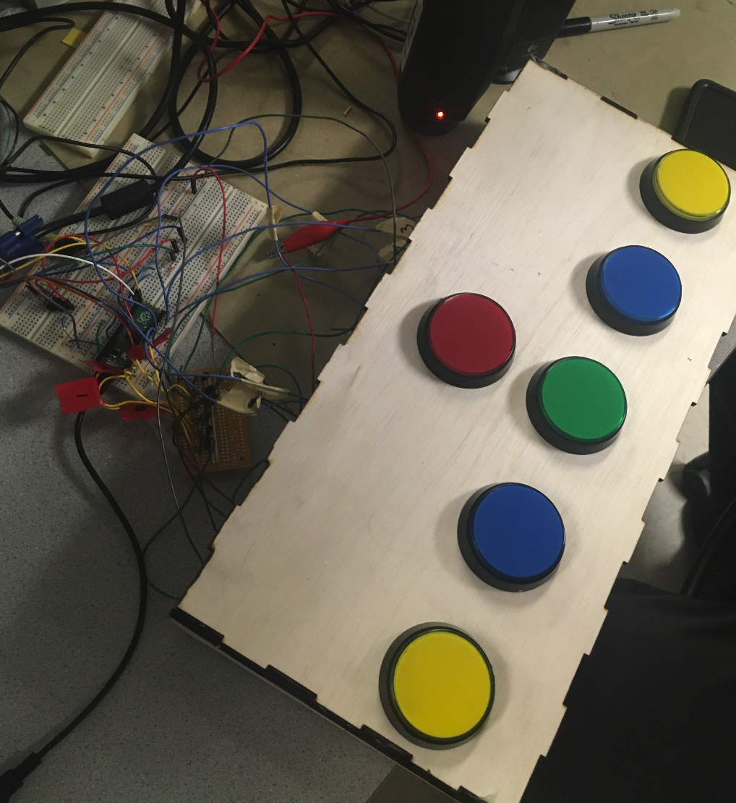
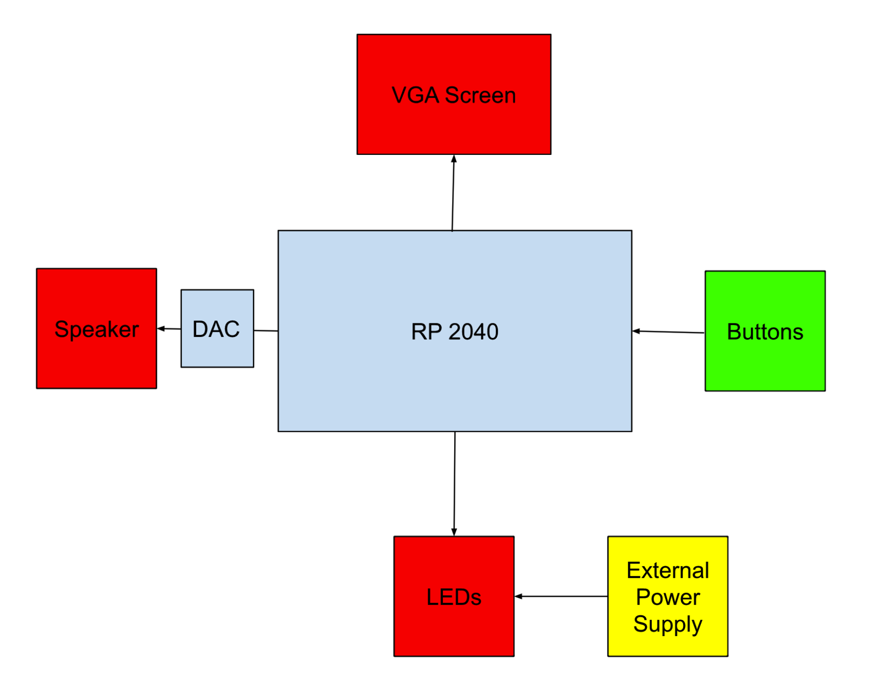
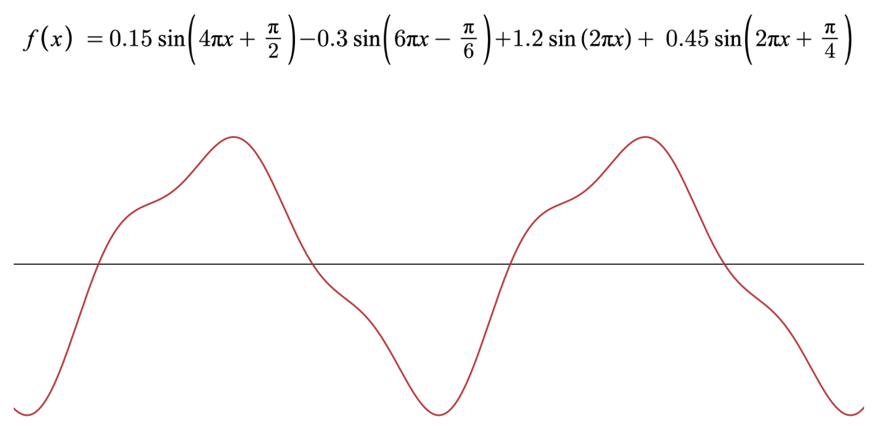

High-Level Design
Rhythm games have been a staple game when thinking of simple games to pass the time, whether it is going to the arcade, playing a game on your phone while traveling, or sitting at home playing with your friends. The game can be for beginners as well as veterans. This concept motivated us to create a rhythm game that could teach you to play an instrument. We first wanted to do drums, but as we started working, we realized our system would be more suited for something like a synth or piano. This is because, in our original version of the game, we were planning to use FFT analysis to be able to detect songs through a microphone and generate the game automatically. However, this proved to be beyond challenging (nearly impossible), so we decided to pivot and implement a synth game instead.
High-Level Structure
As for the game design, the menu screen is controlled by the red and green buttons in the center of our board. The green button cycles through the options and the red button selects the highlighted option. From the menu screen, you can also choose to change the song or the difficulty. Once playing, 5 columns appear with tiles (NoteBars) moving down the screen, indicating when to play a certain note. Each of the buttons corresponds to playing a note in a respective column. You press the button when the LED lights and when the tile hits the black bar. If you hit the button at the right time, the tile will turn cyan and the score will increase by a certain amount of points. If you hit the button at the wrong time, the tile will turn red. The tiles will keep coming down until the game is over. The button pressed will play a note that corresponds to a pre-determined frequency, regardless of timing. Once the game ends it will show your score and then give you the option to go back to the main menu or restart the game.

Image of game board wired to RP2040
High-Level Design of Hardware and Software (with Tradeoffs)
The diagram below shows the high-level block diagram of the game. The VGA screen is used to display the game’s graphics, the buttons control the game, and the DAC and speaker work together to play the synth’s audio. A major tradeoff we experienced in the hardware was that although our buttons provided a very nice interface for users to play our game, they didn’t work too well because they would frequently register a single click as 2 separate clicks. We explain in more depth how we handled this issue in the software section of our report and discuss our hardware design more in the hardware section of our report.

High-level hardware schematic
From the software perspective, we utilized both cores to be able to control the gameplay. Core 0 is responsible for receiving signals from the buttons, controlling the game logic, and displaying the graphics on the VGA screen. Core 1 is responsible for synthesizing all audio using direct digital synthesis and outputting it to the DAC. We didn’t really face any trade-offs on the software side of things, but we did experience some issues which are explained more in-depth in the software section of our report.
Math Used
We didn’t have to work too much with math, but we did have to design an equation for our direct digital synthesis model. We derived this equation through lots of trial and error. We wanted to generate a synthetic sound that was more than a simple sine wave, allowed for clearly distinguishable tones, and was smooth enough to almost sound like a synth bell. The equation and its corresponding wave are shown below.

Sine equation used for synthesis w/ graph
Intellectual Property Considerations
With regards to IP, we never explicitly took code from anybody, with exception the vga graphics library provided in class. Although we do also have songs on our game, all songs, with the exception of “Let It Be” by the Beatles, are public domain songs. Unfortunately, we do not have any permissions to use “Let It Be,” so we will have to take this song off of our game.